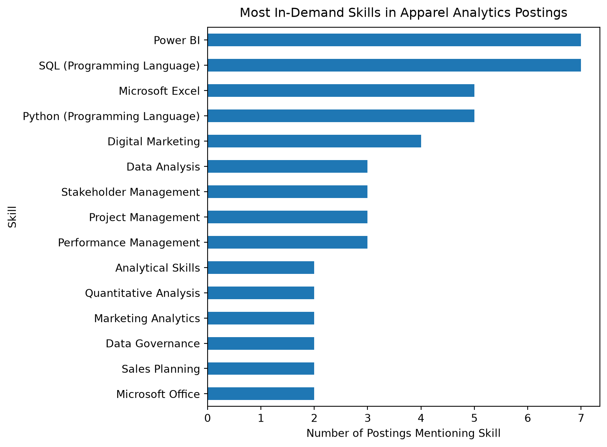
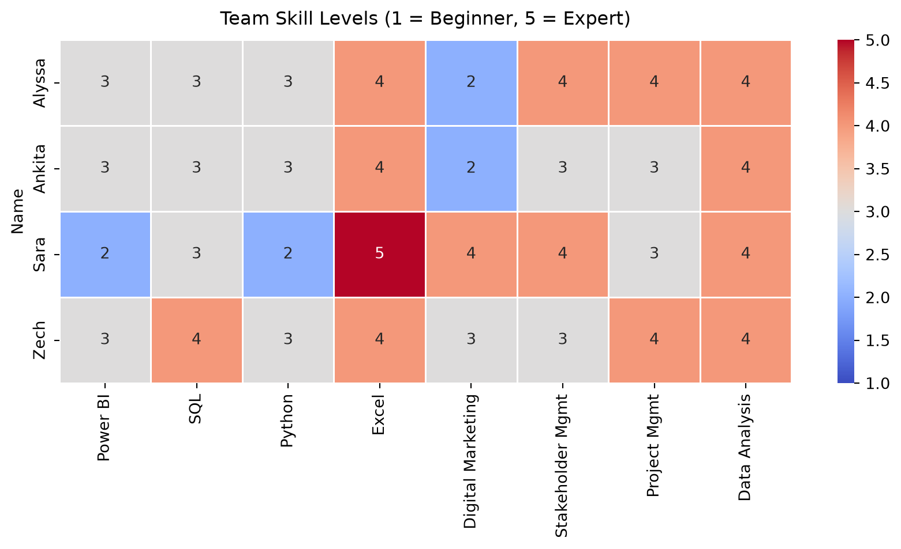
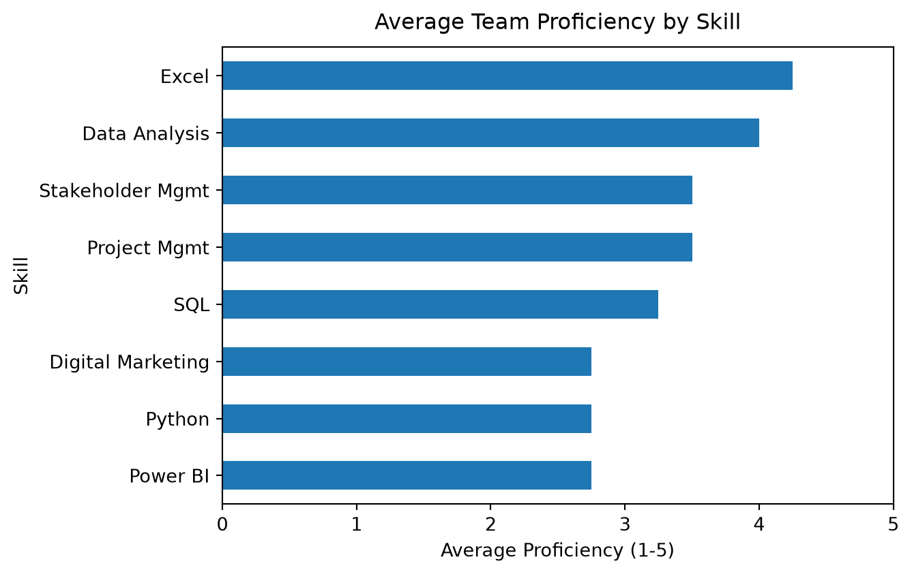

Skill Gap Analysis
Overview
This page compares the skills most commonly requested in our filtered apparel and fashion analytics job postings against the team’s current skill levels, to identify where the team is well-positioned and where there are gaps worth addressing.
Most In-Demand Skills
Skill fields were parsed from each posting’s listed skills. Counts reflect how many of the 19 filtered postings mention each skill at least once.
Power BI and SQL are the most frequently requested skills, each appearing in 7 of the 19 postings, followed by Python and Microsoft Excel in 5 postings each. Digital Marketing appears in 4 postings. The remaining skills appear in 2 to 3 postings each, reflecting a mix of technical, analytical, and communication-related requirements across the sample.
Team Skill Comparison
Each team member self-rated their proficiency (1 = Beginner, 5 = Expert) on the eight most in-demand skills identified above.


As a team, Data Analysis and Excel show the strongest average proficiency (4.0 and 4.25 respectively), reflecting consistent comfort across all four members. Power BI and Python show the lowest average proficiency (2.75 each), both sitting below the “Intermediate” level as a team average. Digital Marketing shows the widest spread across the team, ranging from 2 (Beginner) to 4 (Advanced), reflecting the team’s mixed backgrounds.
Skill Gaps
Comparing market demand (posting frequency) against team proficiency highlights where the team is well-covered and where gaps exist relative to what the market is asking for.
Power BI is the single largest gap: it is tied for the most in-demand skill in the market (7 of 19 postings) but has the lowest average team proficiency (2.75). SQL, the other most in-demand skill (7 of 19 postings), sits at a moderate team average (3.25), suggesting a smaller but still real gap. Python, requested in 5 postings, also averages only 2.75 across the team.
By contrast, Excel and Data Analysis, both requested in the market, are also the team’s strongest areas, so no meaningful gap exists there. Digital Marketing is requested in 4 postings and shows uneven team coverage (one member at Beginner, others Intermediate to Advanced), which is a gap for some but not all team members individually.
Improvement Plan
Based on the gaps identified above, the team’s priorities for skill-building are:
- Power BI — the clearest gap given how frequently it appears in postings relative to team proficiency. Short, structured resources (Microsoft’s free Power BI learning path, or a guided project rebuilding one of this project’s own charts in Power BI) would directly address this.
- SQL — a moderate gap; practicing with the project’s own filtered dataset (writing queries against
apparel_analyst_clean.csvloaded into a local SQLite database) ties skill-building directly to the project itself. - Python — similarly moderate; continuing to build on the pandas work already done in
data_preparation.qmdand this page is a natural, low-cost way to keep strengthening this skill through the remainder of the project.
To close these gaps as a team, members with higher individual proficiency in a given skill (e.g. whoever rated highest in SQL or Power BI) could briefly walk the others through their approach when relevant project tasks come up, rather than treating skill-building as a separate exercise from the coursework itself.